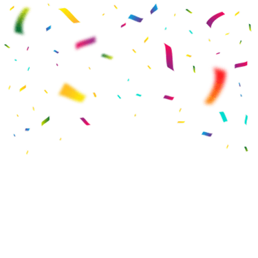
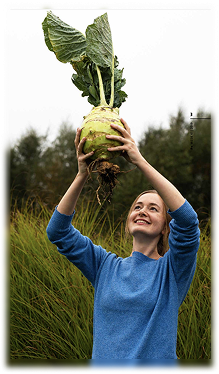
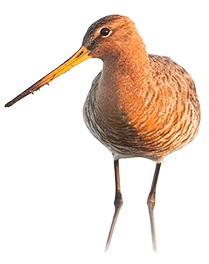

Je wilt bijdragen aan natuurherstel

"De initiatiefnemers vonden het heel belangrijk om inwoners van Amsterdam bij de natuurontwikkeling te betrekken. De boeren gingen zelf met de bus de stad in om met potentiële afnemers van hun melk te praten. Ze lieten de melk proeven, toonden aan voldoende volume te hebben en leveringszekerheid."


